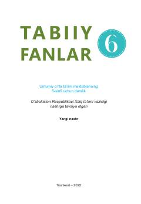

TF6-sinf o'quvchilari uchun tabiiy fanlar fanidan rasmiy darslik.
Mazkur darslik umumiy o'rta ta'lim maktablarining 6-sinfi o'quvchilari uchun mo'ljallangan bo'lib, tabiatni o'rganish, modda va uning xossalari, tirik organizmlar hamda ekologiya kabi asosiy tabiiy fanlar mavzularini o'z ichiga oladi. Kitobda nazariy bilimlar amaliy mashg'ulotlar, loyiha ishlari va mantiqiy fikrlashga yo'naltiruvchi topshiriqlar orqali mustahkamlangan.